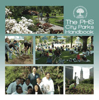

A resource for those who care about creating, reclaiming, and maintaining urban parks
A resource for those who care about creating, reclaiming, and maintaining urban parks


 A resource for those who care about creating, reclaiming, and maintaining urban parks
A resource for those who care about creating, reclaiming, and maintaining urban parks

|  |
The PHS City Parks HandbookPennsylvania Horticultural Societypaper EAN: 978-0-61526-081-5 (ISBN: 0615260810) |
In many cities, park management is no longer the sole province of government, and committed citizens are increasingly becoming involved in park stewardship. At the same time, cities across America are beginning to recognize that investments in parks and other green spaces pay big economic dividends and are viewing them as an essential component of urban revitalization. The PHS City Parks Handbook shows how volunteers, community organizations, and government can work together to create thriving green spaces that not only provide fresh air and beauty but also help build stronger communities and more livable cities.
Drawing on the experiences of the Pennsylvania Horticultural Society's Philadelphia Green program, the nation's most comprehensive greening program, this manual provides a wealth of information from creating an organization's fundraising framework to running a workday and beyond. The accompanying DVD contains inspiring stories, insightful interviews with PHS staff members, city government employees, and park activists, and instructions for planting trees and involving youth in park activities.
Distributed by Temple University Press for the Pennsylvania Horticultural Society
The Pennsylvania Horticultural Society (PHS) is a nonprofit membership organization founded in 1827. Among its many activities, PHS produces the Philadelphia International Flower Show®, the world's largest indoor flower show.
Philadelphia Region
General Interest
Nature and the Environment
© 2015 Temple University. All Rights Reserved. This page: http://www.temple.edu/tempress/titles/2154_reg.html.